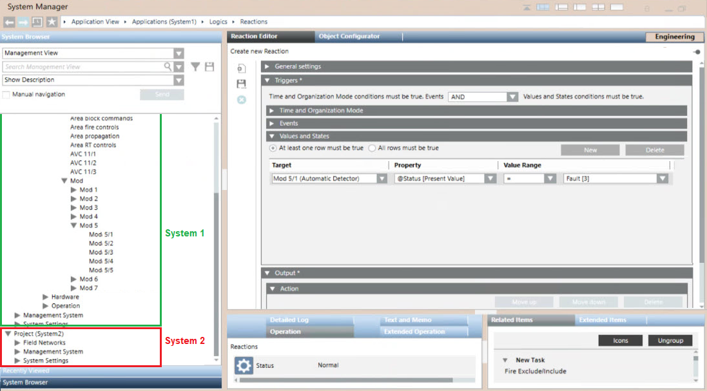
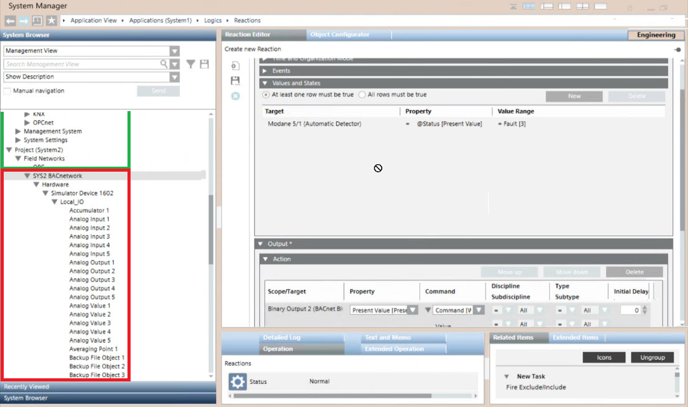

Reactions in Distributed Systems
You can configure reactions on distributed systems (read more general information here) and profit of network-distributed architecture to create automatic interactions between distant field units. A trigger condition from a unit connected to one system can result in commands to a unit connected to another system.
However, when a reaction spans across multiple systems, you need to configure the reaction on the system where the initiating condition occurs so that the trigger is local. You can then configure the output to happen on other systems in the network-distributed architecture.
The illustration below shows the configuration of a reaction on the System 1 of a distributed configuration. In System Browser, you can select triggers among System 1 objects, whereas outputs can be selected from any system.

Note that you cannot actually enter any invalid configuration. In fact, setting a trigger on a system other than the one where you are configuring the reaction is inhibited.
The next illustration shows the failed attempt to add a trigger from System 2 to a System 1 reaction.
